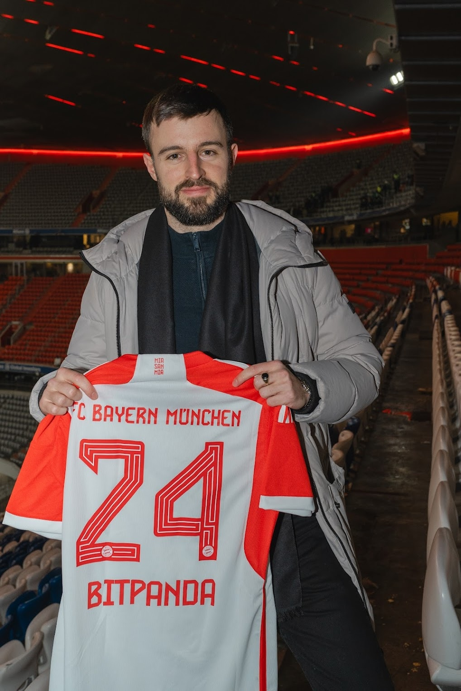

Heute arbeite ich freiberuflich mit Gründern und Führungskräften — von Startups über den Mittelstand bis zum Konzern. Ich unterstütze beim Aufbau, bei der Expansion und bei der Transformation hin zu einem wachstumsbereiten und widerstandsfähigen Betrieb im Zeitalter exponentiellen und rapiden Wandels.
So arbeite ich
Beratend und umsetzend, mit deinem Team, deinen Partnern und deinen Kunden — vom kurzfristigen Projekt bis zur langfristigen Begleitung, feste Tage zum Tagessatz oder flexible Stunden.
Was du bekommst
Einen Sparringspartner auf Augenhöhe, der selbst erlebt hat was er empfiehlt, der Ergebnisse abliefern und nicht nur Stunden abrechnen will, und der sich nicht zu schade ist, die Hände schmutzig zu machen.
Was du nicht bekommst
Einen konventionellen Berater, der teure Präsentationen abliefert und nach dem Workshop verschwindet. Oder einen Angestellten, der drei Monate Starthilfe braucht und vielleicht die Probezeit übersteht.
Ob BaFin-Lizenzierung, Markteinführung, Marathon oder 900 km auf dem Rad durch die Berge (siehe Projekte) — Durchhaltevermögen auf langen, steilen und steinigen Strecken ist mein Modus Operandi.

Freelance — Technologieberater
FokusStrategie · Produkt · Geschäftsentwicklung
StackPython · SQL · Scikit-Learn · GCP
SprachenDE (nativ) · EN (C2) · FR (B2)
BasisBerlin · Remote / Hybrid
cfk.ventures
github.com/cfk44
8 / 8